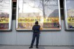
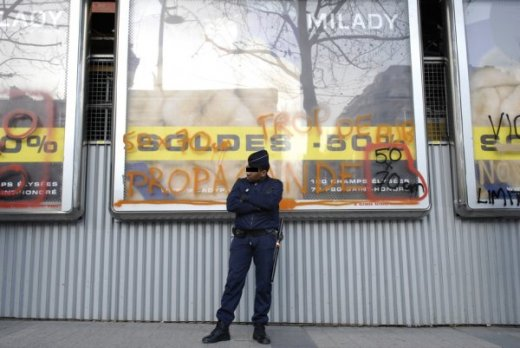
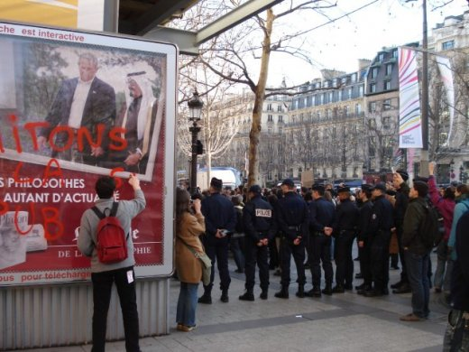

|
|
Accueil du site > Paris > Compte-rendu du barbouillage parisien du 26 janvier 2008
Compte-rendu du barbouillage parisien du 26 janvier 2008
Article publié le mardi 5 février 2008
|

|
 le lieu : 100, avenue des Champs-Elysées, au croisement de la rue de Berri le lieu : 100, avenue des Champs-Elysées, au croisement de la rue de Berri
la date : samedi 26 janvier 2008
l’heure approximative du barbouillage : 15h
le nombre de panneaux barbouillés : 5
le nom des propriétaires des panneaux barbouillés : Avenir (JCDecaux)
le nombre exact de barbouilleurs : 8
le nombre approximatif de spectateurs : 60
le nombre approximatif de journalistes : 10
le nombre approximatif de policiers : 30
les retombées presse connues : 1 photo sur http://panneauxbarbouilles.wordpres..., Matin plus, Metro, France Info, France Inter, Radio-France Berri Sud, Le Parisien
Barbouillage très calme. Les forces de l’ordre (2 escouades d’une quizaine de CRS) ont attendu patiemment pendant les discours de ce rassemblement. Beaucoup de journalistes, qui ont poursuivi les barbouilleurs quand ça a commencé. Au plus grand dépit des barbouilleurs, 6 ne sont pas allé au poste. Un des barbouilleurs n’a même pas été interpelé/contrôlé, malgré son insistance. On note, parmi les barbouilleurs, la présence d’un ami du collectif montpellierain, qui nous a fait l’honneur de sa visite.
 Photo Bénédicte Sévenet Quelques anecdotes marquantes :
dans un discours qui précède l’action, on indique : "Nous avons potentiellement les magistrats avec nous. L’un de nous vient de recevoir les voeux d’un magistrat qui a condamné des barbouilleurs. Ce magistrat a écrit : “Je vous souhaite à vous personnellement et à l’ensemble des membres de votre collectif une excellente année 2008 qui, j’espère, verra peut-être aboutir votre cause par une reconnaissance législative, ce qui évitera de nouvelles péripéties judiciaires…” (ce sont les termes exacts !)."
un policier a dit à un membre du collectif : "J’espère que vous..euh...nous obtiendrons gain de cause"
les policiers ont gardé par un cordon lâche les panneaux, après l’action pendant quelque dizaines de minutes, l’air blasé pour la plupart...mais on
a pu voir l’un d’entre eux prendre en photo avec un téléphone portable plusieurs barbouillages, dont au moins une avec son collègue devant.
Canal+ est venu filmer mais ne diffusera pas, le format ne correspond pas ...
un journaliste indépendant a réalisé un reportage et l’a proposé à plusieurs rédactions qui l’ont refusé. Elles souhaitent plutôt avoir des portraits de militants. Nous rappelons donc ici aux journalistes que nous refusons ce type d’articles. Agir à visage découvert est pour nous un choix assumé, mais en aucun cas une invitation à parler de nos vies familiales et professionnelles. De plus, nous considérons que le traitement de l’information sous cette forme trop personnelle est une forfaiture qui évite ainsi de parler du problème de fond qui est soulevé (place de la publicité dans notre société, inaction des pouvoirs publics, ...).
Voir les photos de cette action
Un reportage photo de NnoMan sur ce lien

|